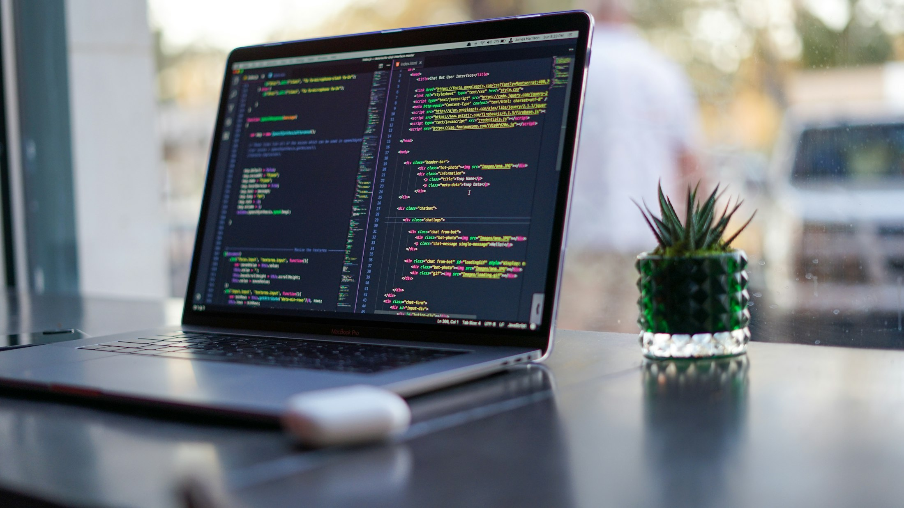
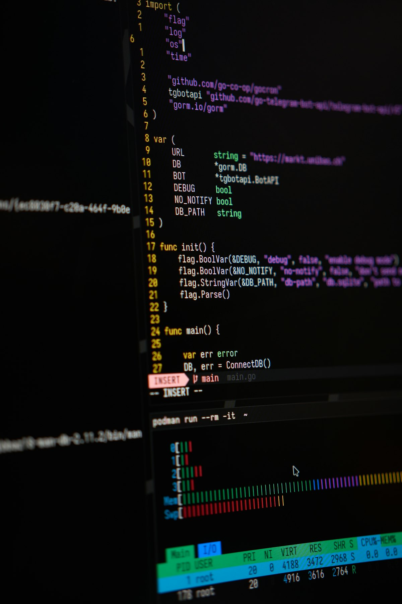

Front-End Development · Developer Tools
Terminal
vs Desktop
How developers talk to the operating system: by clicking, and by typing.
C:\Users\student> cd frontend-course
Click, press → or swipe to begin
Lecture map
Today's Route
01
Two ways to use a computer
GUI and CLI side by side
02
Terminal, shell, kernel and CMD
The words everyone mixes up
03
Under the hood
What the OS does when you click or type
04
Terminal families
Shells, and the apps that host them
05
Compare and choose
Dialects, a workflow, pros, cons and trends
06
Commands and quiz
Cheat sheets, safe habits, then test yourself
01 / Two ways
Two Ways to Talk to a Computer
GUI · Desktop
Graphical User Interface
You point and click on things the OS draws for you: windows, icons, menus. Every option is visible.
Example
Double-click › Projects folder

CLI · Terminal
Command-Line Interface
You type a command and press Enter. The computer answers in text. Fast, precise, repeatable.
Example
C:\Users\you> cd Projects
02 / Vocabulary
Terminal, Shell and Kernel
Layer 1 · window
Terminal
Draws text, captures your keys, handles tabs, fonts and colors. It does not understand commands.
Windows Terminal, iTerm2, VS Code
Layer 2 · interpreter
Shell
Reads the line you typed, expands variables, finds the program and asks the OS to start it.
cmd.exe, PowerShell, Bash, Zsh
Layer 3 · core
OS Kernel
Creates processes, manages memory and files, talks to the hardware. The desktop uses this same kernel.
Windows NT, macOS XNU, Linux
Prompt
The shell's way of saying "ready for your command":
C:\Users\you> PS C:\Users\you> you@laptop:~$
Console
The older word for a program's text input and output. On Windows, the classic console window is conhost.exe.
02 / Vocabulary
What Is CMD?
cmd.exe, the Windows Command Prompt: a shell that runs typed commands and batch scripts (.bat, .cmd).
1981
MS-DOS ships COMMAND.COM, the ancestor of CMD
1987
cmd.exe appears in OS/2, then in Windows NT (1993)
2006
PowerShell arrives as the modern successor
Today
Still in every Windows 11 PC: great for the basics
03 / Under the hood
What Happens When You Click or Type
Desktop road · double-click the VS Code icon
1Input event
Your click reaches Windows as an input message
2explorer.exe
The GUI shell works out which icon you hit
3API call
ShellExecute, then CreateProcess for Code.exe
Terminal road · type node app.js + Enter
1Keystrokes
Windows Terminal hands your line to cmd.exe
2Parsing
Program: node. Argument: app.js
3PATH lookup
Finds node.exe, then calls CreateProcess
Both roads end here
OS Kernel
Creates the process, gives it memory, opens files and schedules the CPU.
Then the GUI app draws a window, and the CLI app prints text to stdout.
The desktop is a program too: explorer.exe is literally called the Windows shell. On macOS and Linux, shells start programs with fork() and exec(): different names, same idea.
03 / Under the hood
Anatomy of a Command
C:\Users\you\my-app>
npm
Program
Which tool to run. The shell finds it on PATH.
install
Subcommand
What you want the tool to do.
vite
Argument
What to act on: here, the package name.
--save-dev
Flag / option
Starts with - or --. Changes the behavior: save it as a dev dependency.
PATH
The list of folders the shell searches. "is not recognized" means the program is not on PATH.
Exit code
Every program ends with a number: 0 means success, anything else is an error. CMD keeps it in %ERRORLEVEL%.
Streams
stdin goes in, stdout is normal output, stderr is error output. Redirect with > file.txt
04 / Terminal families
Shells: The Languages You Type
Shell
Runs on
Since
What makes it different
cmd.exe
Windows
1987
Simple text commands and .bat batch files. Built into every Windows PC, but limited for real scripting.
PowerShell
Windows · macOS · Linux
2006
Passes objects, not plain text. Verb-Noun commands such as Get-ChildItem. Default profile in Windows Terminal.
Bash
Linux · macOS · Git Bash
1989
The classic Unix shell. Most tutorials, servers, Docker images and CI pipelines expect it.
Zsh
macOS · Linux
1990
Bash-like, with smarter completion, themes and plugins (Oh My Zsh). Default on Macs since 2019.
WSL + Bash
Windows 10 and 11
2016
A real Linux inside Windows. Run Bash and Linux tools without leaving your Windows PC.
04 / Terminal families
Terminal Apps: Hosts for Shells
Windows Terminal
Windows 10 / 11
Tabs and panes for CMD, PowerShell and WSL. Default terminal in Windows 11.
Terminal and iTerm2
macOS
Terminal ships with every Mac; iTerm2 adds split panes and search.
GNOME Terminal
Linux
Default on Ubuntu and Fedora. KDE desktops ship Konsole instead.
VS Code terminal
Any OS
A terminal inside your editor: press Ctrl + ` and run npm next to your code.
Key idea
The app is only the window. The shell runs inside it, so one terminal can host many shells, one per tab.
05 / Compare and choose
click any command to copy it
One Task, Three Dialects
| Task | CMD | PowerShell | Bash / Zsh |
|---|---|---|---|
| Where am I? | |||
| List files | |||
| Enter a folder | |||
| New folder | |||
| New empty file | |||
| Copy a file | |||
| Delete a file | |||
| Clear screen | |||
| Show PATH |
PowerShell understands many CMD and Bash names as aliases (ls, dir, cd, cls), but the options differ: ls -la works in Bash and fails in PowerShell.
05 / Compare and choose
Starting a Front-End Project
Desktop route
1
Open File Explorer, go to Desktop
2
Right-click › New › Folder, name it my-app
3
Download a starter template (.zip)
4
Extract the .zip into my-app
5
VS Code › File › Open Folder › my-app
6
Install dependencies: no button for this
7
Run a dev server: no button either
7 steps · 2 dead ends · hard to repeat
4 commands · same result every time
05 / Compare and choose
Pros and Cons
Desktop (GUI)
+ Strengths
- Easy to discover: every option is on screen
- Best for visual work: design, images, browsing
- Forgiving: Undo, Recycle Bin, confirmation dialogs
- Drag and drop, previews and thumbnails
− Weaknesses
- Slow for repetitive work: 100 files = 100 clicks
- Hard to automate or repeat exactly
- Needs a screen; most servers have none
- Every window costs memory and CPU
Terminal (CLI)
+ Strengths
- Fast once you know the commands
- Scriptable: one file can replay 100 steps
- Works remotely over SSH, on servers and in CI
- Home of front-end tools: npm, git, Vite
− Weaknesses
- Steep start: you must remember commands
- No undo: del skips the Recycle Bin
- Error messages can be cryptic
- Each shell speaks a different dialect
Professionals use both: the desktop to explore, the terminal to build and repeat.
05 / Compare and choose
Shell Usage Trends
Bash / Shell, 2025
48.7%
of developers used Bash or another Unix shell. One year earlier it was 33.9%.
+14.8 points in one year
PowerShell, 2025
23.2%
up from 13.8%. CMD is not even listed as a separate option.
Languages developers used
Share of all respondents · multiple answers allowed
| Language | 2024 | 2025 | Change |
|---|---|---|---|
| JavaScript | 62.3% | 66.0% | +3.7 |
| HTML/CSS | 52.9% | 61.9% | +9.0 |
| SQL | 51.0% | 58.6% | +7.6 |
| Python | 51.0% | 57.9% | +6.9 |
| Bash/Shell | 33.9% | 48.7% | +14.8 |
| TypeScript | 38.5% | 43.6% | +5.1 |
| PowerShell | 13.8% | 23.2% | +9.4 |
06 / Commands
click any command to copy it
CMD Cheat Sheet
Navigate
enter a folder
go up one level
jump to the drive root
switch to drive D
list files and folders
find .js files below here
folder tree with files
Files
create a folder (also md)
delete folder + contents
delete a file for good
copy a file
move a file
rename a file
print a file's contents
System
show your IP addresses
test a connection
list running processes
force-stop a process
open ports and their PIDs
OS and hardware details
find a program on PATH
Everyday
clear the screen
list built-in commands
print a variable
open folder in Explorer
open folder in VS Code
run b only if a succeeds
close the window
06 / Commands
click any command to copy it
Daily Commands for Front-End Work
Node.js and npm
check your Node.js version
create package.json
install all dependencies
add one package
start the dev server
build for production
run a tool, no install
Git
download a repository
see what changed
stage all changes
save a snapshot
upload your commits
get the latest changes
create a new branch
These work the same in CMD, PowerShell and Bash. Stop a running dev server with Ctrl + C.
06 / Commands
Habits That Keep You Safe
Keys to Remember
completes file and folder names
scroll through previous commands
stops the running program
shows your history list in CMD
pastes text into the terminal
drop it in the window to paste its path
Before You Press Enter
1
Read the prompt first: it shows which folder you are in.
2
del and rmdir /s skip the Recycle Bin. There is no undo.
3
Wrap paths with spaces in quotes: cd "My Projects"
4
Never paste a command you do not understand.
5
Use Run as administrator only when a task needs it.
Quiz · 1 of 4 · click an answer
What is the difference between a terminal and a shell?
Answer: B. The terminal draws text and takes your keys; the shell (CMD, PowerShell, Bash) runs the commands.
Quiz · 2 of 4 · click an answer
You are in C:\Users\you\my-app and type cd .. Where are you now?
Answer: A. Two dots always mean the parent folder, so cd .. moves exactly one level up. cd \ jumps to the root.
Quiz · 3 of 4 · click an answer
In npm install vite --save-dev, what is --save-dev?
Answer: C. Flags start with - or --. This one records Vite as a development dependency in package.json.
Quiz · 4 of 4 · click True or False
Lightning Round: True or False?
1
PowerShell passes objects between commands, not only plain text.
True. Its commands exchange structured objects with properties you can filter and sort.
2
del moves files to the Recycle Bin, so you can restore them.
False. del deletes permanently. There is no undo in the terminal.
3
A double-click and a typed command both ask the kernel to start a process.
True. Explorer and the shell both end up calling CreateProcess.
4
Windows Terminal can only run CMD.
False. It hosts CMD, PowerShell and WSL shells, one per tab.
Homework
Practice Before Next Lecture
1
In CMD, using commands only, create my-site with index.html, css\style.css and js\app.js.
2
Check the result with tree /f, then open the folder with code .
3
Repeat it in PowerShell or Git Bash and write down which commands changed.
C:\Users\student> echo Questions?